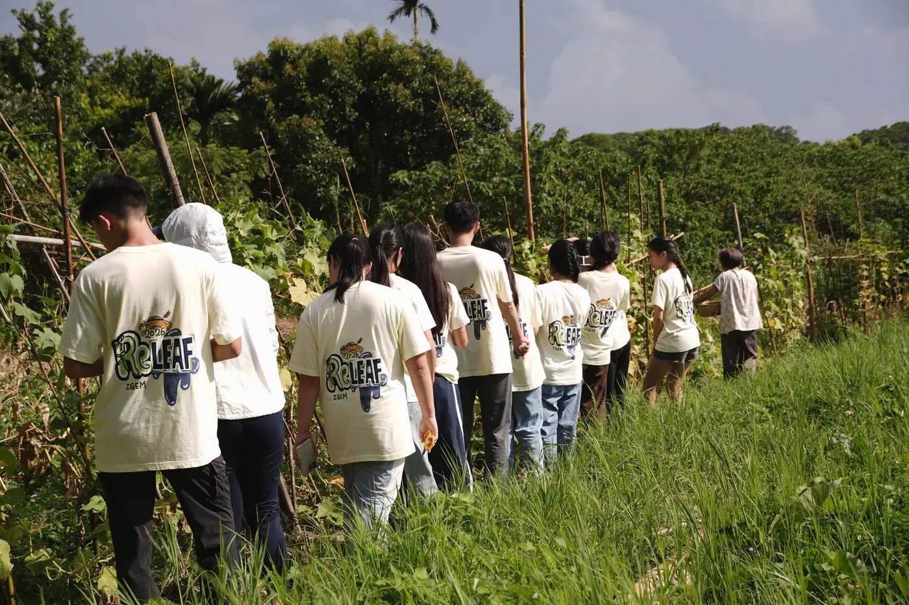
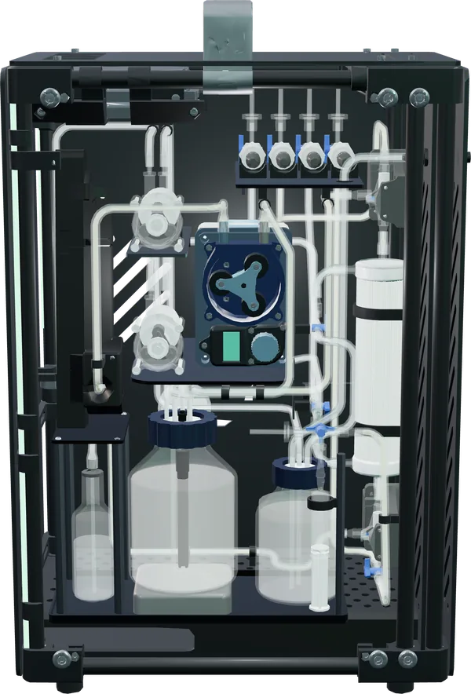
Every Farmer a Biomanufacturer
Empowering future farmers to combat climate change with a Stress-Responsive Optogenetic Bioreactor for Precision Plant Protection
As long as it benefits the plants and does not disrupt the balance of nature, I am very willing to try any new technology. This gives me more time to do what I love most — farming.
The weather swings hardest where Taiwan farms most.
-
Map: close on Tamsui, at the mouth of the Tamsui River on the north coast, with the farmland around it.
Tamsui, the north coast
Farmer Chen farms in Tamsui, on Taiwan’s north coast. Her field is one of the island’s many, and the weather over all of them is changing.
Farmland
-
Map: the western plain from Taichung to Tainan is in the two most volatile classes; the north, the mountains, the east and the far south are lower.
Taiwan
0.29 °Cof warming per decade since 1991
That is nearly triple the island’s earlier rate, and 2024 was its hottest year on record. Our climate volatility index measures how far a place swings within a year: day against night, summer against winter, and how unevenly its rain falls.
Climate volatility index0.380.490.600.710.820.93
-
Map: the farmland of the western plain from Yunlin to Tainan is in the two most volatile classes.
The western plain and the south
99.2%of Taiwan’s farms are under 2 hectares
Together they work 85.3% of its farmland. They cluster along the western plain and in the south, where the volatility index is highest.
Volatility, on the farmland0.380.490.600.710.820.93
-
Map: Pingtung's farmland in the far south is in the warmest night class, with Hsinchu in the north-west.
Pingtung, the far south
~10%of a rice yield lost for each degree of night warming
Warm nights keep a rice plant burning the sugar it made during the day. Pingtung’s farmland is in the warmest night band on the island. Across southern Taiwan, a heat spike in the flowering season that was once rare is now routine.
Night temperature, 2013–2016, °C20.524.225.425.926.527.3
-
Map: Yilan's farmland in the north-east is in the oldest class.
Yilan, the north-east
63.5years, the average age of a farmer in Taiwan
More than half are over 65. Yilan’s farmers are among the oldest. A rice farmer there told us his harvest has fallen to a third of its best, or less, in the past few years.
Average farmer age, 2016555657
-
Map: farmland covers most of the western plain and runs along the eastern valleys.
The whole island
The farmers with the least land and the least room to absorb a bad season are the ones farming where the weather is changing fastest.
Farmland
-
Even when farmers see the stress, protection can still remain out of reach.
Map: the island again, all of its farmland.Taiwan’s farmland
Biostimulants that help plants withstand heat, drought and salinity are being found faster than they become products a farmer can buy. A promising molecule only becomes a product if it is worth producing, purifying, formulating and trialling at scale. That bar is set by the size of the market, not by the farm that needs it.
How can we empower farmers to
detect stress earlier and access protection in time?
We believe the answer has to meet five demands.
- Protective
- On demand
- Automated
- Biosafe
- Monitored
ReLEAF
From stress prediction, protein production, separation and delivery in one integrated system.
Lights its parts in the 3D model.
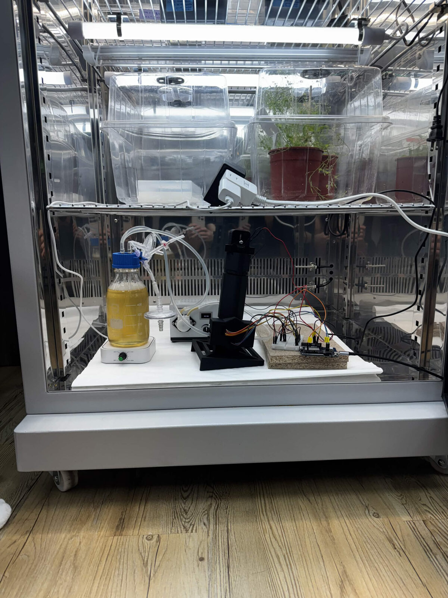
Loading reactor 0%
How ReLEAF works
From a reading on the leaf to a protectant at the roots, in one machine.
- 01Read the field. A leaf sensor reads leaf temperature and wetness. With the weather forecast, our model turns them into a stress index.
- 02Call for green light. As the index nears the damaging threshold, the model calls for green light and a person approves it. Green light (520 nm) switches on the CcaSR circuit in the engineered B. subtilis.
- 03Make the protectant. The cells grow in a stirred 1 L culture and secrete ACC deaminase into the medium. An in-line photometer reads their density without drawing a sample.
- 04Keep the cells, pass the protein. A pump runs the culture round a loop through a hollow-fibre membrane. Whole cells stay in the loop; the protectant crosses the 0.2 µm wall.
- 05Deliver to the roots. The protectant leaves in the permeate, to join hydroponic circulation or soil irrigation at the roots.
- 06Switch off. Red light (660 nm) switches the circuit off again.
Green light switches on the CcaSR circuit in B. subtilis, and the cells secrete the protectant
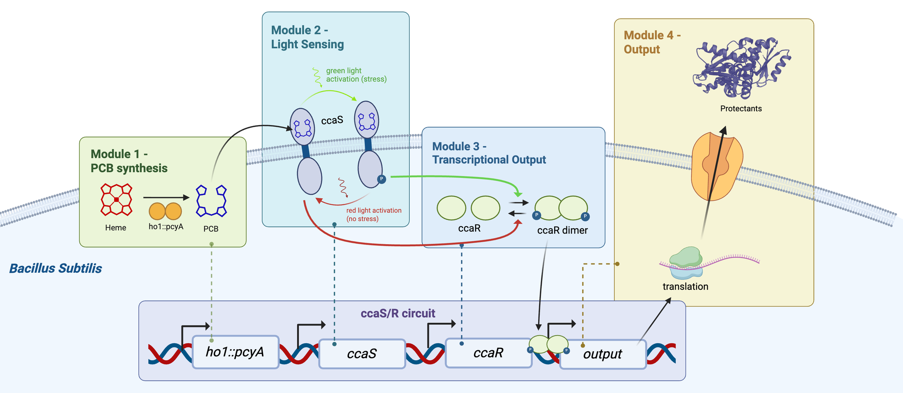
-
Make the pigment
ho1 and pcyA turn the cell’s heme into phycocyanobilin, which the light sensor needs.
-
Sense the light
Green light (520 nm) switches CcaS on in the membrane. Red light (660 nm) switches it off.
-
Switch the gene on
CcaS passes a phosphate to CcaR, and the CcaR dimer turns on the output gene.
-
Secrete the protectant
The cell makes the protectant and secretes it into the medium. The output slot takes multiple protectants for different plant stresses.
We didn’t shape ReLEAF in isolation.
-
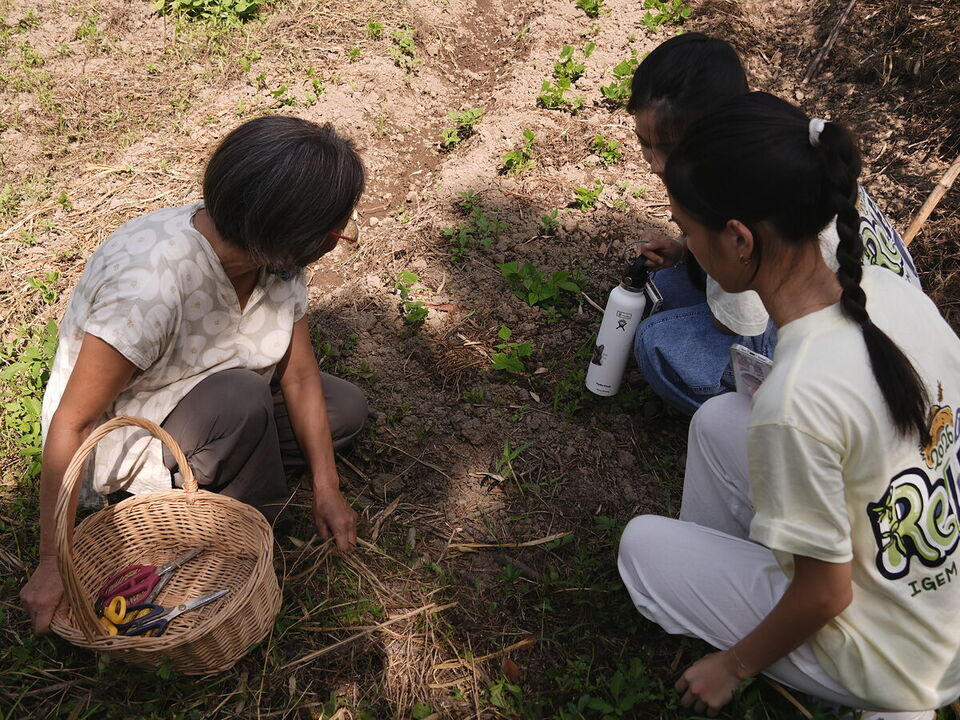
Local Farmers
Grounded us in real agricultural needs.
-
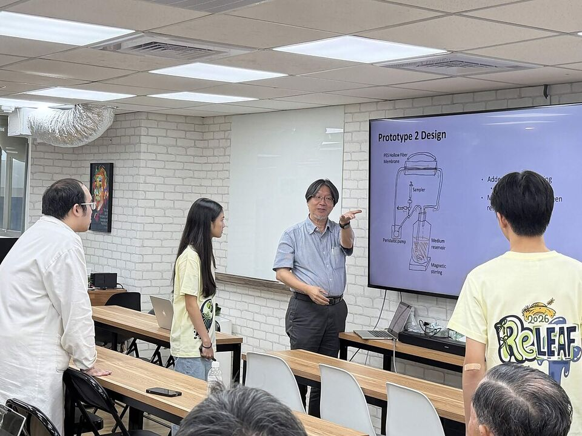
Academic Experts
Helped us refine the science and engineering.
-
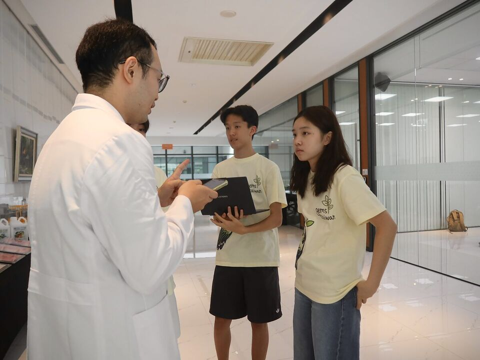
Industry Stakeholders
Showed us the barriers between production and access.
Built from the needs of one farm, one field at a time.
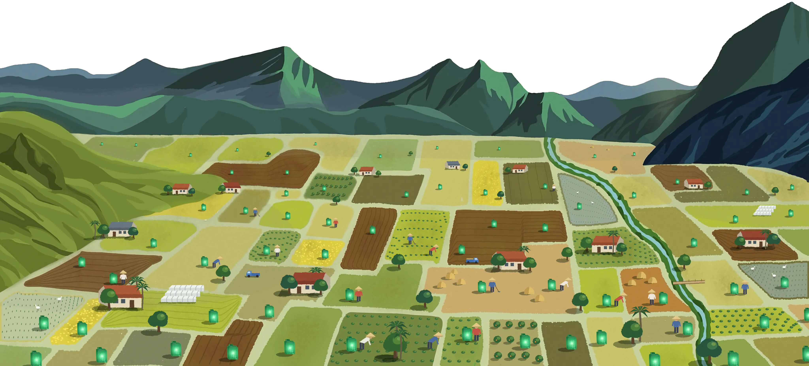
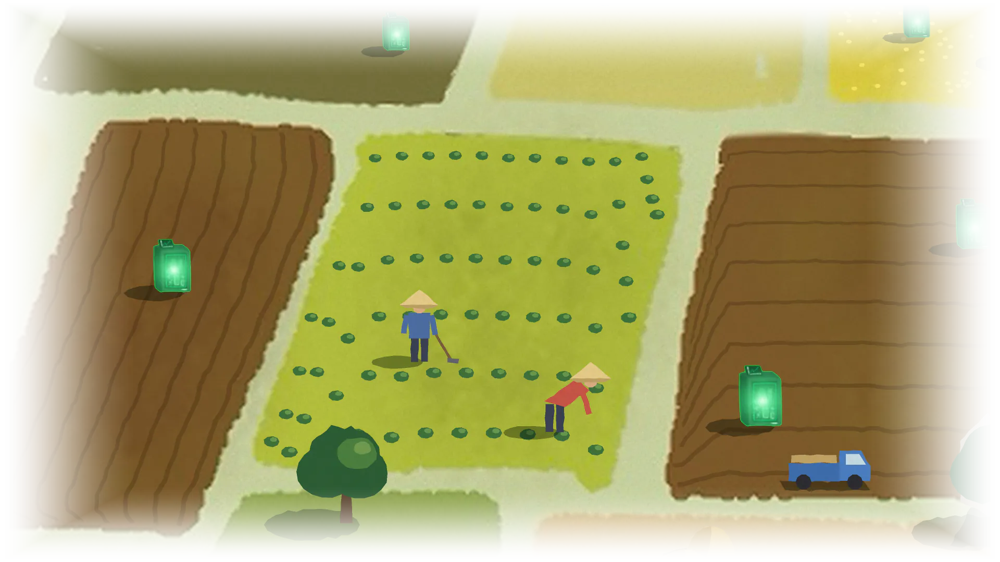
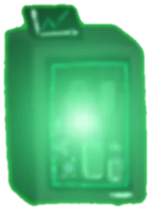
Every farmera biomanufacturer.
Toward a future where plant protection lies in each farmer’s hands.
With thanks to
- Green Media
- 2nd ISLSDR, NCHU
- CH Biotech
- World Vegetable Center
- Yes Health iFarm
- Tamsui Happy Farm
- Lanyang River Friendly Farming Cooperative
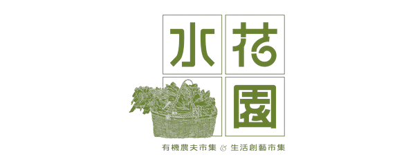
Water Garden Organic Farmers’ Market- Taipei Expo Farmers Market
- IDT
- SnapGene
- Twist Bioscience
- Claude
- GenScript